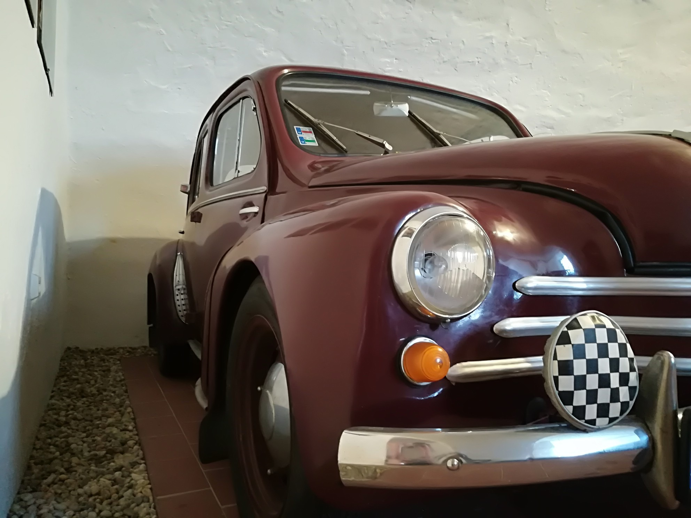

"You don't take a photograph, you make it." Ansel Adams


This was in a museum in Slovakia.

This is from the top of Trzy Korony.
This is the Powerscourt Waterfall, Ireland's highest waterfall.

This was taken in Botanical Gardens Puerto de La Cruz, Tenerife.
Birds of paradise are my favorite flowers.

I love these little guys, my favorite thing to do when I am in Wrocław
is to look for them.

This was taken in Wrocław.